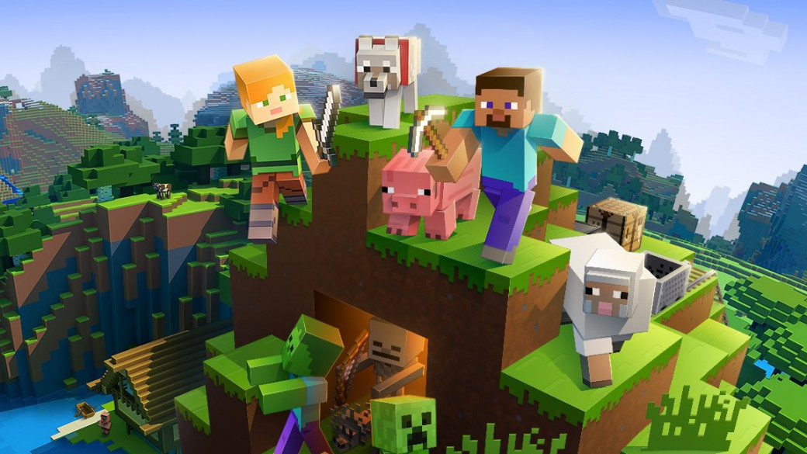

Introducción
Este instructivo te facilitará la creación de tu propio servidor de Minecraft Java para poder jugar con tus amigos. Sigue estos pasos para comenzar.
Aclaraciones
- La IP del servidor será dinámica, es decir, cada vez que el servidor vuelva a abrir su IP cambiará.
- Se hará uso del CMD, utilización de carpetas, instalación de diferentes archivos.
- Desconozco el funcionamiento de este método en launchers piratas.
- El instructivo espera que uses el sistema operativo Windows 10 o superior.
- La finalidad de este instructivo es que evites la manipulación de tu router para abrir los puertos únicamente necesarios.
Requisitos
- Conexión a internet, obviamente.
- JDK última versión de Java.
- Archivo del servidor "server.jar". Este puede encontrarse en la página oficial de Minecraft.
- Programa "ngrok". Este nos permitirá abrir los puertos del router sin tanto quilombo.
- PC con 16 o 8 de memoria RAM ya que habrá que hostear el servidor.
Pasos para Crear el Servidor
-
Descargar los Archivos:
- Visita el sitio oficial de Minecraft. Descarga el archivo del servidor de la sección "Descargar servidor de Minecraft: Java Edition".
- Visita el sitio oficial de Oracle y descarga la última versión del JDK Java Development Kit. Recuerda instalarlo. El error más común del server es no tener la última versión instalada.
- Visita el sitio oficial de Ngrok y descarga la última versión del mismo.
-
Crear una carpeta para el servidor:
- En tu computadora, crea una nueva carpeta donde desees almacenar los archivos del servidor.
- Mueve el archivo "server.jar" y el "ngrok.exe" descargado a esta nueva carpeta.
- El archivo de Java puedes descartarlo ya que solo nos servía para instalar el JDK.
-
Ejecutar el servidor por primera vez:
- Descomprime el archivo "server.jar" y también ejecútalo. Así nos aseguraremos de tener todos los archivos.
- Dentro debería haber un archivo de texto llamado EULA, ábrelo y si está escrito eula=false, cámbialo a eula=true, guárdalo y cierra el archivo.
- Abre una terminal o símbolo del sistema. Para esto en el buscador de Windows escribiremos "CMD".
- Si es tu primera vez abriendo el CMD no te preocupes, yo te explicaré. En este pequeño cuadro oscuro podremos ingresar diferentes comandos que facilitarán las cosas, pero recuerda que cualquier cosa que pase por aquí está moviendo los archivos del PC directamente y es peligroso si no se lo usa con cuidado.
- Necesitamos navegar hasta la carpeta donde tienes los archivos del server. Entonces, en la carpeta del server puedes presionar "ALT + d" y copiar la ubicación de la carpeta.
- Cuando lo tengas copiado escribe el comando cd y luego pegas la ubicación, debería quedar más o menos así: cd c:/equipo/escritorio/server maincra
- El comando que usamos sirve para pararnos en esa carpeta.
- Ejecuta el siguiente comando:
java -Xmx3G -Xms3G -jar server.jar --bonusChest nogui - Este comando iniciará el servidor, deberían mostrarse largos mensajes de textos, si imprime error, puede ser que no se haya instalado la versión de Java correcta.
- Si quieres que el mundo se genere sin un cofre bonus puedes eliminar esta parte --bonusChest nogui.
- Si logró iniciarse, felicidades creaste un servidor local donde se pueden unir amigos que estén con el mismo internet.
- Puedes usar el comando en la terminal para obtener la IP y dársela a tus amigos
ifconfig. - El comando debería imprimir varios valores, el que necesitamos es el IPv4 o similar.
- Si eres el host del server, cuando inicies Minecraft Java y coloques la IP para el servidor también puedes escribir localhost y debería entrar al servidor creado.
-
Configurar el servidor:
- Abre el archivo
server.propertieso simplemente "server" en un editor de texto. - Ajusta las configuraciones según tus preferencias. Algunas configuraciones comunes incluyen:
motd=Mensaje de bienvenida- Cambia el mensaje de bienvenida que verán los jugadores al unirse.max-players=Número- Define el número máximo de jugadores que pueden unirse al servidor.level-name=Nombre del mundo- Cambia el nombre del mundo.difficulty=hard- Dificultad del juego.
- Abre el archivo
-
Abrir el server con amigos externos:
- Para esto usaremos ngrok que nos dará una IP dinámica para que los amigos que no estén con nosotros se unan.
- Ejecuta ngrok que está dentro de la carpeta del server. Abrirá una nueva terminal de ngrok.
- El primer comando que debes escribir es:
ngrok config add-authtoken 2el1NVC0I4LPDE4DQ8bqEFjCwOV_4HJoMYSGGSGa86ND8jw6S, esto solo es la primera vez que lo usemos. - Ahora para que ngrok nos genere una IP ingrese este comando:
ngrok tcp 25565, es el puerto del router que comúnmente se usa para hostear servers de Minecraft por defecto. - Listo, ngrok debería imprimir una nueva IP dinámica cada vez que abras el servidor para tus amigos.
-
Último paso, disfrutar.
- No olvides que mientras esté abierto el server no cierres el CMD ni la terminal de ngrok o el server cerrará.
- Recuerda cerrar el servidor cuando terminen de jugar con el comando
stop. - Si no lo cierras de todos modos hay un autoguardado, pero no se guardará en el momento que apagues las terminales.
- Disfrutar.